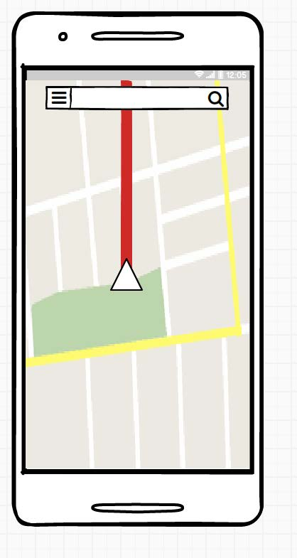

ExploreHelix
Familiarise yourself with the Urban Sciences Building by taking a tour of the building or get directions to specific rooms using directions that are easy to follow.

Familiarise yourself with the Urban Sciences Building by taking a tour of the building or get directions to specific rooms using directions that are easy to follow.
The dots and lines across the front of the USB is a self-portrait of Newcastle University. The image, which provides solar shading, colour and depth to the central forum space, is based on a data mining exercise. The lines, dots and circles represent the information resources in the University’s websites.
Punch cards were first used to control machinery in the early 19th century, and later carried data and instructions for calculating machines and digital computers.
The small dotted pattern that runs around the building represents a punch card carrying the following message: GALLOWGATE - NORTH ELSWICK COLLIERY SCOTTISH & NEWCASTLE BREWERY - SCIENCE CENTRAL.
The dot patterns were designed to be appreciated close-up. As an echo of the history of this site and of early methods of data storage, they reflect the physical beginnings of the digital revolution.
MindSphere is the cloud-based, open, collaborative IoT operating system from Siemens. Newcastle University is connecting its assets from across the campus into MindSphere, enabling students and researchers – alongside Siemens staff and industry partners – to harness the value of data.
The display next to reception shows some of our oldest computers and those we have used throughout our 60 year history.
Open Lab is a world-leading interaction design and ubiquitous computing research group in the School of Computing. It focuses on the experience centred design of digital technology and applied challenges in ubiquitous computing. One of the top three in the world for research papers on Human-Computer Interaction, it includes the Digital Economy Research Centre and EPSRC Centre for Doctoral Training in Digital Civics.
Capacity of 303 students and has the ability for the lecturer to customise what is shown on each of the projected screen. This means the lecture can still display the lecture notes whilst they are demonstrating a piece of code or practical element of the lecture.
There is a power socket at every seat and each seat has lumbar support.
312 machines, with all the software that students will need for their degree. The machines run NetSupport software that allows the lecturer to send and receive files from the class. The lecturer is also able to share their screen to the students and give a lecture.
The desks allow students to work on their own laptop or use pen and paper for some of the modules that do not require a computer.
There are 2 roof terraces in the building on 4th and 5th Floors with the 4th floor being used by students.
Lord Mayor’s Design Award for Sustainability.
CEEQUAL Award for best practise in sustainable drainage
Constructing Excellence in the North East awards for :
Integration and Collaborative Working, Sustainability,
Digital & Construction, Offisite Project of the Year,
Building Project of the Year
Collaborative Built Environment Award, Digital Project
of the year—Digital Construction Awards
Innovation in Teaching and Learning Award—Education
Estates